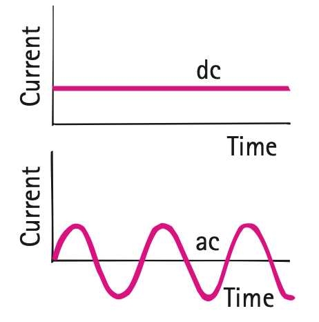

1. What does a watt measure in an electric device?
2. In $P=IV$, what three quantities are related?
3. What does watt-hour measure: power or energy?
4. If two devices run for the same time, which uses more energy: the higher-power or lower-power device?
5. What two quantities must be known to calculate energy use with $E=Pt$?
6. A 120 V appliance draws 4 A. Calculate its power.
7. A 40 W fan runs for 6 h. Determine its electrical energy use in Wh.
8. Use the current–time figure to distinguish direct current from alternating current, then explain why either type can still transfer electrical energy to a device.

9. A 1000 W microwave runs for 0.20 h and a 100 W lamp runs for 3 h. Compare their electrical energy use.
10. A device uses 360 Wh while operating at constant 90 W. Determine its operating time.
11. A classmate says “high power means high energy use no matter how briefly the device runs.” Use a short numerical counterexample and $E=Pt$ to critique the claim.
12. Two bulbs provide similar visible light but draw different electrical power. Explain what additional evidence would be needed to make a defensible efficiency claim rather than only a power comparison.
13. A 100-W label tells you the device transfers electrical energy at a rate of
14. Which expression finds power from circuit measurements?
15. Which product gives electrical energy used over an interval?
16. A 30 V device carries 2 A. What is its power?
17. A 120 W monitor operates 2.5 h. What energy does it use?
18. Which pair uses equal energy?
19. An LED and incandescent lamp give similar useful light. The LED draws much less power. What is the strongest supported claim?
20. A solar array is labeled 5 kW peak. Why is that not enough to predict daily energy?